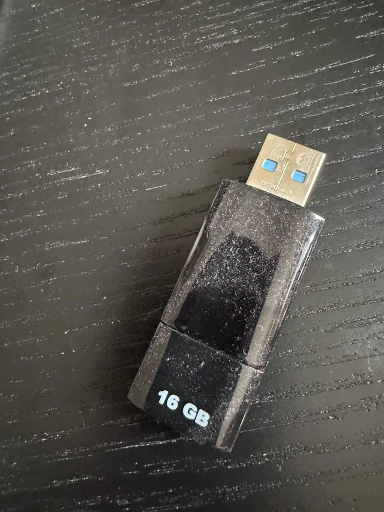

Mochila Perdida
Mochila negra con un cuaderno dentro...
Ayudamos a la comunidad universitaria a recuperar sus pertenencias de manera rápida, transparente y organizada.
Mochila negra con un cuaderno dentro...

Cargador Tipo C

Llaves encontradas en el estacionamiento

USB encontrada en el LAB-02